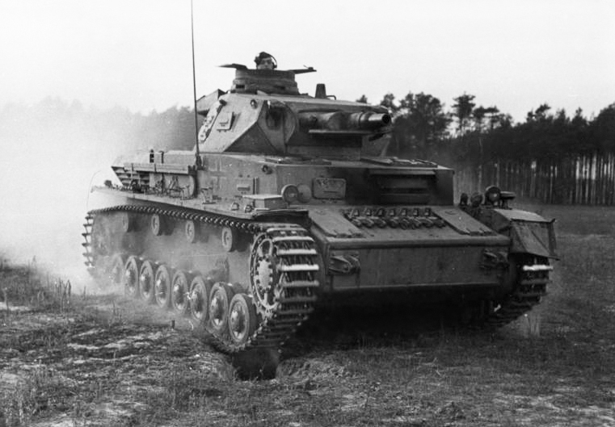
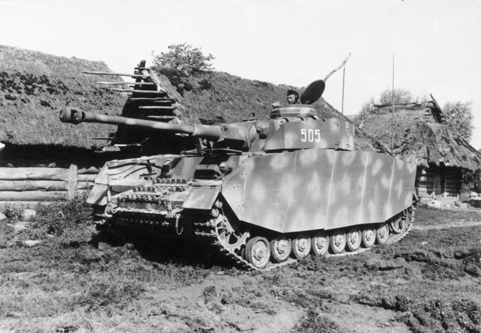

he Panzerkampfwagen IV (Pz.Kpfw. IV), commonly known as the Panzer IV, was a German medium tank developed in the late 1930s and used extensively during the Second World War. Its ordnance inventory designation was Sd.Kfz. 161.
The Panzer IV was the most numerous German tank and the second-most numerous German fully tracked armoured fighting vehicle of the Second World War; 8,553 Panzer IVs of all versions were built during World War II, only exceeded by the StuG III assault gun with 10,086 vehicles. Its chassis was also used as the base for many other fighting vehicles, including the Sturmgeschütz IV assault gun, the Jagdpanzer IV self-propelled anti-tank gun, the Wirbelwind self-propelled anti-aircraft gun, and the Brummbär self-propelled gun.
The Panzer IV saw service in all combat theatres involving Germany and was the only German tank to remain in continuous production throughout the war. It was originally designed for infantry support, while the similar Panzer III was to fight armoured fighting vehicles. However, as the Germans faced the formidable T-34, the Panzer IV had more development potential, with a larger turret ring to mount more powerful guns, so it swapped roles with the Panzer III whose production wound down in 1943. The Panzer IV received various upgrades and design modifications, intended to counter new threats, extending its service life. Generally, these involved increasing the armour protection or upgrading the weapons, although during the last months of the war, with Germany's pressing need for rapid replacement of losses, design changes also included simplifications to speed up the manufacturing process.
The Panzer IV was partially succeeded by the Panther medium tank, which was introduced to counter the Soviet T-34, although it continued to be a significant component of German armoured formations to the end of the war. It was the most widely exported tank in German service, with around 300 sold to Finland, Romania, Spain and Bulgaria. After the war, Syria procured Panzer IVs from France and Czechoslovakia, which saw combat in the 1967 Six-Day War.

The Panzer IV was the brainchild of the German general and innovative armoured warfare theorist Heinz Guderian. In concept, it was intended to be a support tank for use against enemy anti-tank guns and fortifications. Ideally, each tank battalion in a panzer division was to have three medium companies of Panzer IIIs and one heavy company of Panzer IVs. On 11 January 1934, the German army wrote the specifications for a "medium tractor", and issued them to a number of defense companies. To support the Panzer III, which would be armed with a 37-millimetre (1.46 in) anti-tank gun, the new vehicle would have a short-barreled, howitzer-like 75-millimetre (2.95 in) as its main gun, and was allotted a weight limit of 24 tonnes (26.46 short tons). Development was carried out under the name Begleitwagen ("accompanying vehicle"), or BW, to disguise its actual purpose, given that Germany was still theoretically bound by the Treaty of Versailles ban on tanks. MAN, Krupp, and Rheinmetall-Borsig each developed prototypes, with Krupp's being selected for further development.
The chassis had originally been designed with a six-wheeled Schachtellaufwerk interleaved-roadwheel suspension (as already adopted for German half-tracks), but the German Army amended this to a torsion bar system. Permitting greater vertical deflection of the roadwheels, this was intended to improve performance and crew comfort both on- and off-road. However, due to the urgent requirement for the new tank, neither proposal was adopted, and Krupp instead equipped it with a simple leaf spring double-bogie suspension, with eight rubber-rimmed roadwheels per side.
The prototype had a crew of five; the hull contained the engine bay to the rear, with the driver and radio operator, who doubled as the hull machine gunner, seated at the front-left and front-right, respectively. In the turret, the tank commander sat beneath his roof hatch, while the gunner was situated to the left of the gun breech and the loader to the right. The torque shaft ran from the rear engine to the transmission box in the front hull between the driver and radio operator. To keep the shaft clear of the rotary base junction, which provided electrical power to the turret including the motor to turn it, the turret was offset 66.5 mm (2.62 in) to the left of the chassis center line, and the engine was moved 152.4 mm (6.00 in) to the right. Due to the asymmetric layout, the right side of the tank contained the bulk of its stowage volume, which was taken up by ready-use ammunition lockers.
Accepted into service under the designation Versuchskraftfahrzeug 622 (Vs.Kfz. 622), "experimental motor vehicle 622", production began in 1936 at Fried. Krupp Grusonwerk AG factory at Magdeburg.
The first mass-produced version of the Panzer IV was the Ausführung A (abbreviated to Ausf. A, meaning "Variant A"), in 1936. It was powered by a Maybach HL108 TR, producing 250 PS (183.87 kW), and used the SGR 75 transmission with five forward gears and one reverse, achieving a maximum road speed of 31 kilometres per hour (19.26 mph). As main armament, the vehicle mounted the short-barreled, howitzer-like 75 mm (2.95 in) Kampfwagenkanone 37 L/24 (7.5 cm KwK 37 L/24) tank gun, which was a low-velocity weapon mainly designed to fire high-explosive shells. Against armoured targets, firing the Panzergranate (armour-piercing shell) at 430 metres per second (1,410 ft/s) the KwK 37 could penetrate 43 millimetres (1.69 in), inclined at 30 degrees, at ranges of up to 700 metres (2,300 ft). A 7.92 mm (0.31 in) MG 34 machine gun was mounted coaxially with the main weapon in the turret, while a second machine gun of the same type was mounted in the front plate of the hull. The main weapon and coaxial machine gun were sighted with a Turmzielfernrohr 5b optic while the hull machine gun was sighted with a Kugelzielfernrohr 2 optic. The Ausf. A was protected by 14.5 mm (0.57 in) of steel armour on the front plate of the chassis, and 20 mm (0.79 in) on the turret. This was only capable of stopping artillery fragments, small-arms fire, and light anti-tank projectiles. A total of 35 A versions were produced.
In 1937 production moved to the Ausf. B. Improvements included the replacement of the original engine with the more powerful 300 PS (220.65 kW) Maybach HL 120TR, and the transmission with the new SSG 75 transmission, with six forward gears and one reverse gear. Despite a weight increase to 16 t (18 short tons), this improved the tank's speed to 42 kilometres per hour (26.10 mph). The glacis plate was augmented to a maximum thickness of 30 millimetres (1.18 in), while a new driver's visor was installed on the straightened hull front plate, and the hull-mounted machine gun was replaced by a covered pistol port and visor flap. The superstructure width and ammunition stowage were reduced to save weight. A new commander's cupola was introduced which was adopted from the Panzer III Ausf. C. A Nebelkerzenabwurfvorrichtung (smoke grenade discharger rack) was mounted on the rear of the hull starting in July 1938 and was back fitted to earlier Ausf. A and Ausf. B chassis starting in August 1938. Forty-two Panzer IV Ausf. Bs were manufactured.
On 26 May 1941, mere weeks before Operation Barbarossa, during a conference with Hitler, it was decided to improve the Panzer IV's main armament. Krupp was awarded the contract to integrate again the 50 mm (1.97 in) Pak 38 L/60 gun into the turret. The first prototype was to be delivered by 15 November 1941. Within months, the shock of encountering the Soviet T-34 medium and KV-1 heavy tanks necessitated a new, much more powerful tank gun. In November 1941, the decision to up-gun the Panzer IV to the 50-millimetre (1.97 in) gun was dropped, and instead Krupp was contracted in a joint development to modify Rheinmetall's pending 75 mm (2.95 in) anti-tank gun design, later known as 7.5 cm Pak 40 L/46.
Because the recoil length was too great for the tank's turret, the recoil mechanism and chamber were shortened. This resulted in the 75-millimetre (2.95 in) KwK 40 L/43. When the new KwK 40 was loaded with the Pzgr. 39 armour-piercing shell, the new gun fired the AP shell at some 750 m/s (2,460 ft/s), a substantial 74% increase over the howitzer-like KwK 37 L/24 gun's 430 m/s (1,410 ft/s) muzzle velocity. Initially, the KwK 40 gun was mounted with a single-chamber, ball-shaped muzzle brake, which provided just under 50% of the recoil system's braking ability. Firing the Panzergranate 39, the KwK 40 L/43 could penetrate 77 mm (3.03 in) of steel armour at a range of 1,830 m (6,000 ft).
The longer 7.5 cm guns were a mixed blessing. In spite of the designers' efforts to conserve weight, the new weapon made the vehicle nose-heavy to such an extent that the forward suspension springs were under constant compression. This resulted in the tank tending to sway even when no steering was being applied, an effect compounded by the introduction of the Ausführung H in March 1943.
The Ausf. F tanks that received the new, longer, KwK 40 L/43 gun were temporarily named Ausf. F2 (with the designation Sd.Kfz. 161/1). The tank increased in weight to 23.6 tonnes (26.0 short tons). Differences between the Ausf. F1 and the Ausf. F2 were mainly associated with the change in armament, including an altered gun mantlet, internal travel lock for the main weapon, new gun cradle, new Turmzielfernrohr 5f optic for the L/43 weapon, modified ammunition stowage, and discontinuing of the Nebelkerzenabwurfvorrichtung in favor of turret mounted Nebelwurfgerät. Three months after beginning production, the Panzer IV Ausf. F2 was renamed Ausf. G.
During its production run from March 1942 to June 1943, the Panzer IV Ausf. G went through further modifications, including another armour upgrade which consisted of a 30-millimetre (1.18 in) face-hardened appliqué steel plate welded (later bolted) to the glacis—in total, frontal armour was now 80 mm (3.15 in) thick. This decision to increase frontal armour was favorably received according to troop reports on 8 November 1942, despite technical problems of the driving system due to added weight. At this point, it was decided that 50% of Panzer IV production would be fitted with 30 mm (1.18 in) thick additional armour plates. On 5 January 1943, Hitler decided that all Panzer IV should have 80 mm (3.15 in) frontal armour. To simplify production, the vision ports on either side of the turret and the loader's forward vision port in the turret front were removed, while a rack for two spare road wheels was installed on the track guard on the left side of the hull. Complementing this, brackets for seven spare track links were added to the glacis plate.
For operation in high temperatures, the engine's ventilation was improved by creating slits over the engine deck to the rear of the chassis, and cold weather performance was boosted by adding a device to heat the engine's coolant, as well as a starter fluid injector. A new light replaced the original headlight and the signal port on the turret was removed. On 19 March 1943, the first Panzer IV with Schürzen skirts on its sides and turret was exhibited. The double hatch for the commander's cupola was replaced by a single round hatch from very late model Ausf. G. and the cupola was up-armoured from 50 mm (1.97 in) to 95 mm (3.74 in). In April 1943, the KwK 40 L/43 was replaced by the longer 75-millimetre (2.95 in) KwK 40 L/48 gun, with a redesigned multi-baffle muzzle brake with improved recoil efficiency. The longer L/48 resulted in the introduction of the Turmzielfernrohr 5f/1 optic.
The next version, the Ausf. H, began production in June 1943 and received the designation Sd. Kfz. 161/2. The integrity of the glacis armour was improved by manufacturing it as a single 80-millimetre (3.15 in) plate. A reinforced final drive with higher gear ratios was introduced. To prevent adhesion of magnetic anti-tank mines, which the Germans feared would be used in large numbers by the Allies, Zimmerit paste was added to all the vertical surfaces of the tank's armour. The turret roof was reinforced from 10-millimetre (0.39 in) to 16-millimetre (0.63 in) and 25-millimetre (0.98 in) segments. The vehicle's side and turret were further protected by the addition of 5-millimetre (0.20 in) hull skirts and 8-millimetre (0.31 in) turret skirts. This resulted in the elimination of the vision ports located on the hull side, as the skirts obstructed their view. During the Ausf. H's production run, its rubber-tired return rollers were replaced with cast steel, a lighter cast front sprocket and rear idler wheel gradually replaced the previous components, the hull was fitted with triangular supports for the easily damaged side skirts, the Nebelwurfgeraet was discontinued, and a mount in the turret roof, designed for the Nahverteidigungswaffe, was plugged by a circular armoured plate due to initial production shortages of this weapon.
These modifications meant that the tank's weight increased to 25 tonnes (27.56 short tons). In spite of a new six-speed SSG 77 transmission adopted from the Panzer III, top speed dropped to as low as 16 km/h (10 mph) on cross country terrain. An experimental version of the Ausf H was fitted with a hydrostatic transmission but was not put into production.

The Panzer IV was the only German tank to remain in both production and combat throughout World War II, and measured over the entire war it comprised 30% of the Wehrmacht's total tank strength. Although in service by early 1939, in time for the occupation of Czechoslovakia, at the start of the war the majority of German armour was made up of obsolete Panzer Is and Panzer IIs. The Panzer I in particular had already proved inferior to Soviet tanks, such as the T-26, during the Spanish Civil War.
When Germany invaded Poland on 1 September 1939, its armoured corps was composed of 1,445 Panzer Is, 1,223 Panzer IIs, 98 Panzer IIIs and 211 Panzer IVs; the more modern vehicles amounted to less than 10% of Germany's armoured strength. The 1st Panzer Division had a roughly equal balance of types, with 17 Panzer Is, 18 Panzer IIs, 28 Panzer IIIs, and 14 Panzer IVs per battalion. The remaining panzer divisions were heavy with obsolete models, equipped as they were with 34 Panzer Is, 33 Panzer IIs, 5 Panzer IIIs, and 6 Panzer IVs per battalion. Although the Polish Army possessed less than 200 tanks capable of penetrating the German light tanks, Polish anti-tank guns proved more of a threat, reinforcing German faith in the value of the close-support Panzer IV.
Despite increased production of the medium Panzer IIIs and IVs prior to the German invasion of France on 10 May 1940, the majority of German tanks were still light types. According to Heinz Guderian, the Wehrmacht invaded France with 523 Panzer Is, 955 Panzer IIs, 349 Panzer IIIs, 278 Panzer IVs, 106 Panzer 35(t)s and 228 Panzer 38(t)s. Through the use of tactical radios and superior tactics, the Germans were able to outmaneuver and defeat French and British armour. However, Panzer IVs armed with the KwK 37 L/24 75-millimetre (2.95 in) tank gun found it difficult to engage French tanks such as the Somua S35 and Char B1. The Somua S35 had a maximum armour thickness of 55 mm (2.2 in), while the KwK 37 L/24 could only penetrate 43 mm (1.7 in) at a range of 700 m (2,300 ft). The British Matilda II was also heavily armoured, with at least 70 mm (2.76 in) of steel on the front and turret and a minimum of 65 mm on the sides, but were few in number.
Although the Panzer IV was deployed to North Africa with the German Afrika Korps, until the longer gun variant began production, the tank was outperformed by the Panzer III with respect to armour penetration. Both the Panzer III and IV had difficulty in penetrating the British Matilda II's thick armour, while the Matilda's 40-mm QF 2 pounder gun could knock out either German tank; the Matilda II's major disadvantage was its low speed. By August 1942, Rommel had only received 27 Panzer IV Ausf. F2s, armed with the L/43 gun, which he deployed to spearhead his armoured offensives. The longer gun could penetrate all American and British tanks in theater at ranges of up to 1,500 m (4,900 ft), by that time the most heavily armoured of which was the M3 Grant. Although more of these tanks arrived in North Africa between August and October 1942, their numbers were insignificant compared to the amount of matériel shipped to British forces.
The Panzer IV also took part in the invasion of Yugoslavia and the invasion of Greece in early 1941.
With the launching of Operation Barbarossa on 22 June 1941, the unanticipated appearance of the KV-1 and T-34 tanks prompted an upgrade of the Panzer IV's 75 mm (2.95 in) gun to a longer, high-velocity 75 mm gun suitable for anti-tank use. This meant that it could now penetrate the T-34 at ranges of up to 1,200 m (3,900 ft) at any angle. The 75 mm KwK 40 L/43 gun on the Panzer IV could penetrate a T-34 at a variety of impact angles beyond 1,000 m (3,300 ft) range and up to 1,600 m (5,200 ft). Shipment of the first model to mount the new gun, the Ausf. F2, began in spring 1942, and by the summer offensive there were around 135 Panzer IVs with the L/43 tank gun available. At the time, these were the only German tanks that could defeat T-34 or KV-1 with sheer firepower. They played a crucial role in the events that unfolded between June 1942 and March 1943, and the Panzer IV became the mainstay of the German panzer divisions. Although in service by late September 1942, the Tiger I was not yet numerous enough to make an impact and suffered from serious teething problems, while the Panther was not delivered to German units in the Soviet Union until May 1943. The extent of German reliance on the Panzer IV during this period is reflected by their losses; 502 were destroyed on the Eastern Front in 1942.
The Panzer IV continued to play an important role during operations in 1943, including at the Battle of Kursk. Newer types, such as the Panther, were still experiencing crippling reliability problems that restricted their combat efficiency, so much of the effort fell to the 841 Panzer IVs that took part in the battle. Throughout 1943, the German army lost 2,352 Panzer IVs on the Eastern Front; some divisions were reduced to 12-18 tanks by the end of the year. In 1944, a further 2,643 Panzer IVs were destroyed, and such losses were becoming increasingly difficult to replace. Nevertheless, due to a shortage of replacement Panther tanks, the Panzer IV continued to form the core of Germany's armoured divisions, including elite units such as the II SS Panzer Corps, through 1944.
In January 1945, 287 Panzer IVs were lost on the Eastern Front. It is estimated that combat against Soviet forces accounted for 6,153 Panzer IVs, or about 75% of all Panzer IV losses during the war.
Panzer IVs comprised around half of the available German tank strength on the Western Front prior to the Allied invasion of Normandy on 6 June 1944. Most of the 11 panzer divisions that saw action in Normandy initially contained an armoured regiment of one battalion of Panzer IVs and another of Panthers, for a total of around 160 tanks, although Waffen-SS panzer divisions were generally larger and better equipped than their Heer counterparts. Regular upgrades to the Panzer IV had helped to maintain its reputation as a formidable opponent. The bocage countryside in Normandy favored defense, and German tanks and anti-tank guns inflicted very heavy casualties on Allied armour during the Normandy campaign, despite the overwhelming Allied air superiority. German counter-attacks were blunted in the face of Allied artillery, infantry-held anti-tank weapons, tank destroyers and anti-tank guns, as well as the ubiquitous fighter-bomber aircraft. The side skirt armour could predetonate shaped charge anti-tank weapons such as the British PIAT, but could be pulled away by rugged terrain. German tankers in all theaters were "frustrated by the way these skirts were easily torn off when going through dense brush".
The Allies had also been improving their tanks; the widely used American-designed M4 Sherman medium tank, while mechanically reliable, repairable, and available in large numbers, suffered from an inadequate gun in terms of armour-piercing. Against earlier-model Panzer IVs, it could hold its own, but with its 75 mm M3 gun, struggled against the late-model Panzer IV. The late-model Panzer IV's 80 mm (3.15 in) frontal hull armour could easily withstand hits from the 75 mm (2.95 in) weapon on the Sherman at normal combat ranges, though the turret remained vulnerable.
The British up-gunned the Sherman with their highly effective 76 mm QF 17-pounder anti-tank gun, resulting in the Firefly; although this was the only Allied tank capable of dealing with all current German tanks at normal combat ranges, few (342) were available in time for the Normandy invasion. One Sherman in every British troop of four was a Firefly. By the end of the Normandy campaign, a further 550 Fireflies were built, which was enough to make good any losses. A second British tank equipped with the 17-pdr gun, the Cruiser Mk VIII Challenger, could not participate in the initial landings having to wait for port facilities to be ready to land. It was not until July 1944 that American Shermans fitted with the 76 mm gun M1 gun achieved a parity in firepower with the Panzer IV.
By 29 August 1944, as the last surviving German troops of Fifth Panzer Army and Seventh Army began retreating towards Germany, the twin cataclysms of the Falaise Pocket and the Seine crossing cost the Wehrmacht dearly. Of the 2,300 tanks and assault guns it had committed to Normandy (including around 750 Panzer IVs), over 2,200 had been lost. Field Marshal Walter Model reported to Hitler that his panzer divisions had remaining, on average, five or six tanks each.
During the winter of 1944-45, the Panzer IV was one of the most numerous tanks in the Ardennes offensive, where further heavy losses—as often due to fuel shortages as to enemy action—impaired major German armoured operations in the West thereafter. The Panzer IVs that took part were survivors of the battles in France between June and September 1944, [dubious - discuss] with around 260 additional Panzer IV Ausf. Js issued as reinforcements.